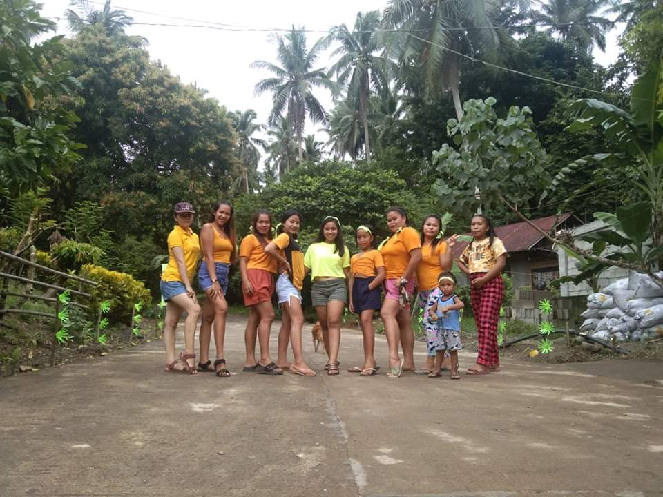
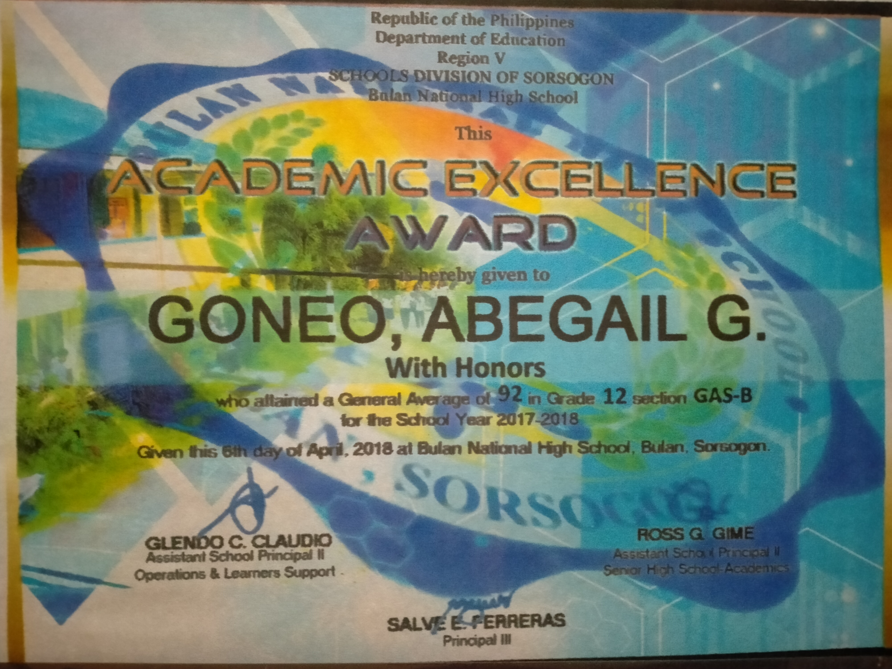
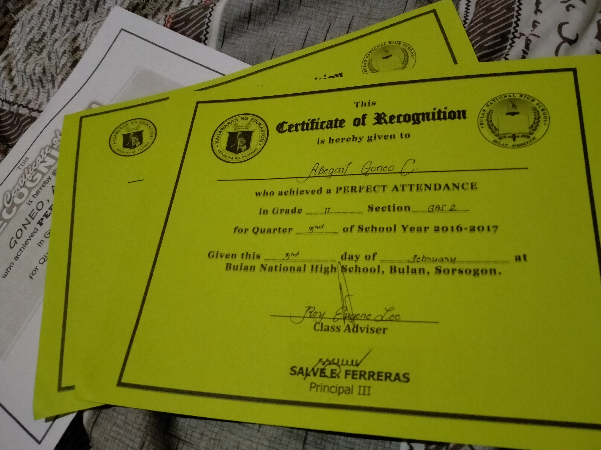
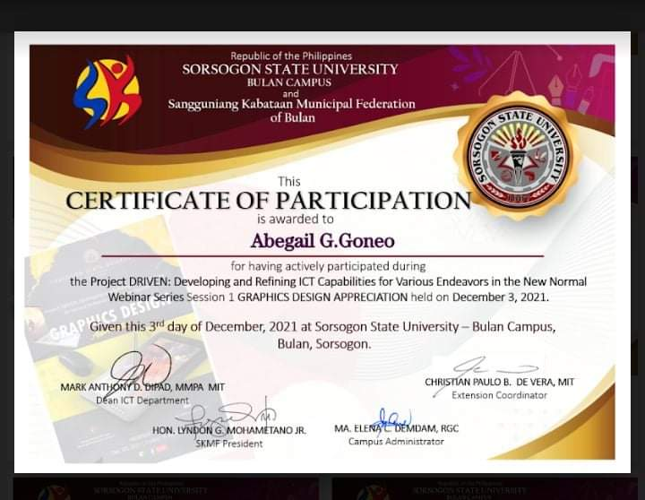

I'm Abegail Glomar Goneo people calls me by the name Abby, Im a tubong Bulaneno and Im proud of it. I'm a 4th Year College at Sorsogon State University-Bulan Campus at the course of Bachelor of Science and Information Technoloy. Im an Sk Secretary of Brgy. Abad Santos and has a vison to strengthen the bond in my community and put a good values to the table by being a good influence to the witnesses, also I love to join in a community services t whenever its possible. I love singing and I would love to offer it to God .

As an Sk Secretary of my Barangay It is my pleasure to build a good community together with the kabataan, to train our social skill, to make my Barangay an enjoyable, safe and a God fearing Community

I graduated at Bulan NationaL Highschool and I receive an Academic Excellence Award(With Honor)becasuse of being a silent active in the school I usually had a good memory during highschool, more experience the better although I study but dont necessarily mean I closed the door for experiences.

During Senior HighSchool I receive 3 consecutive Perfect Attendance Certificate, Im dedicated in School I dont want to miss any single classes although I have a subject that Im not good at but still I want to learn.

I atteded the ICT Program on December 3rd via zoom/fb live, I really like the concept and the ideas that the speakers give especially the asset of the ICT Sir Jason Paul Glina. different tactics, ideas and strategies I had learned about graphic designing and many more.

Nature is my best therapy, I love to take my motor and love to just unwind in mother nature's gift. I also love to take care of the environment and supporting environment program by participating whenever I can.